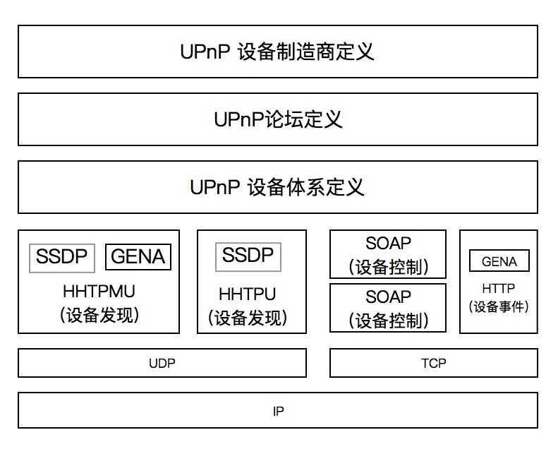
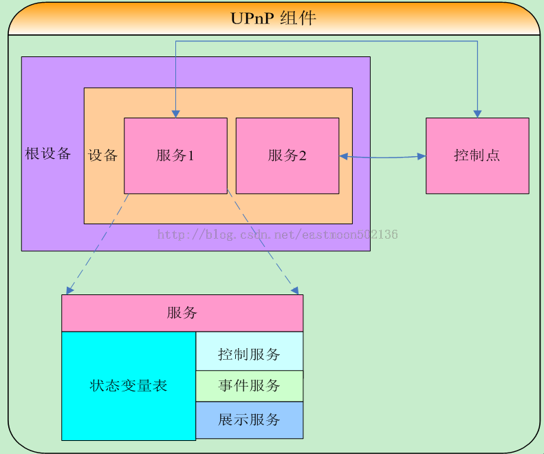

DLNA投屏
DLNA基于一组开放的互联网标准，包括IP，UPnP（通用即插即用）和HTTP。DLNA投屏就是在这些标准的基础上实现的。一般国产电视都内置了该服务，手机客户端用第三方库集成一下，就能支持。相对于破解iOS设备的AirPlay协议会方便很多。
这两篇文章讲的很详细
基于DLNA实现iOS，Android投屏：SSDP发现设备
基于DLNA实现iOS，Android投屏：SOAP控制设备
源码地址
原本的mrdlna库倒入项目无法成功编译，也缺失一些回调，修改之后的代码在此：github代码
投屏的流程如下：
源设备搜索目标设备：当你想要从一个源设备（如手机或电脑）投屏到另一个目标设备（如智能电视或音响）时，源设备会首先在同一网络环境下通过SSDP（简单服务发现协议）广播一个发现请求。对应源码：
1
2
3
4
5
6
7
8
9
10
11
12
13//核心文件 CLUPnPServer、GCDAsyncUdpSocket
//IPv4下的多播地址
static NSString *ssdpAddres = @"239.255.255.250";
//IPv4下的SSDP端口
static UInt16 ssdpPort = 1900;
- (NSString *)getSearchString
{
return [NSString stringWithFormat:@"M-SEARCH * HTTP/1.1\r\nHOST: %@:%d\r\nMAN: \"ssdp:discover\"\r\nMX: 3\r\nST: %@\r\nUSER-AGENT: iOS UPnP/1.1 Tiaooo/1.0\r\n\r\n", ssdpAddres, ssdpPort, serviceType_AVTransport];
}
NSData *sendData = [[self getSearchString] dataUsingEncoding:NSUTF8StringEncoding];
[_udpSocket sendData:sendData toHost:ssdpAddres port:ssdpPort withTimeout:-1 tag:1];目标设备响应请求：在网络环境中的DLNA设备会监听这样的广播。一旦收到发现请求，它们就会回应源设备，提供自己的设备和服务信息，如设备类型、服务列表、控制URL等。需要注意的是，如果发现设备遇阻，可以仔细查看返回的参数，和源码中解析的能不能对应上，如果有差异适配即可。
1
2
3
4
5
6
7
8
9
10
11
12
13
14
15
16
17
18
19
20
21
22
23
24
25
26
27
28
29
30
31
32
33
34
35
36
37
38
39
40
41
42
43
44
45
46
47
48
49
50
51
52
53
54
55
56
57
58
59
60
61
62
63
64
65
66
67
68
69
70
71
72
73
74
75
76
77
78
79
80
81
82
83
84
85
86
87//核心文件 CLUPnPServer
//发现设备有两种方式，一种是NOTIFY打头（设备定期的广播），另外一种是http打头（主动搜索，参见getSearchString代码）
@autoreleasepool {
NSString *string = [[NSString alloc] initWithData:data encoding:NSUTF8StringEncoding];
if ([string hasPrefix:@"NOTIFY"]) {
NSString *serviceType = [self headerValueForKey:@"NT:" inData:string];
if ([serviceType isEqualToString:serviceType_AVTransport]) {
NSString *location = [self headerValueForKey:@"Location:" inData:string];
NSString *usn = [self headerValueForKey:@"USN:" inData:string];
NSString *ssdp = [self headerValueForKey:@"NTS:" inData:string];
if ([self isNilString:ssdp]) {
CLLog(@"airPlay-ssdp = nil");
return;
}
if ([self isNilString:usn]) {
CLLog(@"airPlay-usn = nil");
return;
}
if ([self isNilString:location]) {
CLLog(@"airPlay-location = nil");
return;
}
if ([ssdp isEqualToString:@"ssdp:alive"]) {
dispatch_async(_queue, ^{
if ([self.deviceDictionary objectForKey:usn] == nil) {
[self addDevice:[self getDeviceWithLocation:location withUSN:usn] forUSN:usn];
}
});
} else if ([ssdp isEqualToString:@"ssdp:byebye"]) {
dispatch_async(_queue, ^{
[self removeDeviceWithUSN:usn];
});
}
} else if ([string hasPrefix:@"HTTP/1.1"]) {
NSString *location = [self headerValueForKey:@"Location:" inData:string];
NSString *usn = [self headerValueForKey:@"USN:" inData:string];
if ([self isNilString:usn]) {
CLLog(@"airPlay-usn = nil");
return;
}
if ([self isNilString:location]) {
CLLog(@"airPlay-location = nil");
return;
}
dispatch_async(_queue, ^{
if ([self.deviceDictionary objectForKey:usn] == nil) {
[self addDevice:[self getDeviceWithLocation:location withUSN:usn] forUSN:usn];
}
});
}
}
// 通过上面的解析，得到location和usn（设备id）
// 然后通过发送一个location的http请求获取设备更多的信息(设备名等)
// 设备信息是标准的xml，需要引入xml解析库解析（GDataXML）
- (CLUPnPDevice *)getDeviceWithLocation:(NSString *)location withUSN:(NSString *)usn {
....
}
// 返回的xml参见Device.xml文件
HTTP/1.1 200 OK
Content-Length : 3612
Content-type : text/xml
Date : Tue, 01 Mar 2016 10:00:36 GMT+00:00
// xml中关注服务列表以及其id
<?xml version="1.0" encoding="UTF-8"?>
<root xmlns="urn:schemas-upnp-org:device-1-0" xmlns:qq="http://www.tencent.com">
...
<device>
<serviceList>
...
<service>
<serviceType>urn:schemas-upnp-org:service:AVTransport:1</serviceType>
<serviceId>urn:upnp-org:serviceId:AVTransport</serviceId>
<controlURL>/dev/88024158-a0e8-2dd5-ffff-ffffc7831a22/svc/upnp-org/AVTransport/action</controlURL>
<eventSubURL>/dev/88024158-a0e8-2dd5-ffff-ffffc7831a22/svc/upnp-org/AVTransport/event</eventSubURL>
<SCPDURL>/dev/88024158-a0e8-2dd5-ffff-ffffc7831a22/svc/upnp-org/AVTransport/desc.xml</SCPDURL>
</service>
</serviceList>
</device>
...
</>
// 根据服务ID和名字，可以通过http请求SCPDURL得到，所有该服务提供的action支持列表
// 为了实现简单的投屏和控制（播放、暂停、停止、快进）操作并不需要解析服务描述文件源设备连接与目标控制：源设备收到目标设备的响应后，会根据收到的信息识别和选择可以进行投屏的目标设备，然后根据设备支持的action，发送控制请求。
1
2
3
4
5
6
7
8
9
10
11
12
13
14
15
16
17
18
19
20
21
22
23
24
25
26
27
28
29// 发送投屏action，具体action使用参数可以在上一步的action列表获取
// 发送的是device相关的一个xml post请求
- (void)setAVTransportURL:(NSString *)urlStr WithType:(NSString*)typeStr
{
CLUPnPAction *action = [[CLUPnPAction alloc] initWithAction:@"SetAVTransportURI"];
[action setArgumentValue:@"0" forName:@"InstanceID"];
[action setArgumentValue:urlStr forName:@"CurrentURI"];
NSString *value = (typeStr&&[typeStr isEqualToString:@"1"])? ImageDIDL:VideoDIDL(urlStr);
[action setArgumentValue:value forName:@"CurrentURIMetaData"];
[self postRequestWith:action];
}
{
NSURLSession *session = [NSURLSession sharedSession];
NSURL *url = [NSURL URLWithString:[action getPostUrlStrWith:_model]];
NSString *postXML = [action getPostXMLFile];
NSMutableURLRequest *request = [NSMutableURLRequest requestWithURL:url];
request.HTTPMethod = @"POST";
[request addValue:@"text/xml" forHTTPHeaderField:@"Content-Type"];
[request addValue:[action getSOAPAction] forHTTPHeaderField:@"SOAPAction"];
[self addRequestCustomHeader:request];
}
{
// [action getPostXMLFile] 标准xml中指定了action类型
static NSString *serviceType_AVTransport = @"urn:schemas-upnp-org:service:AVTransport:1";
static NSString *serviceType_RenderingControl = @"urn:schemas-upnp-org:service:RenderingControl:1";
[xmlEle addChild:[GDataXMLElement attributeWithName:@"xmlns:u" stringValue:[self getServiceType]]];
}
协议栈：（网上找的两张图）


本博客所有文章除特别声明外，均采用 CC BY-NC-SA 4.0 许可协议。转载请注明来自 Jim zhang's Blog！